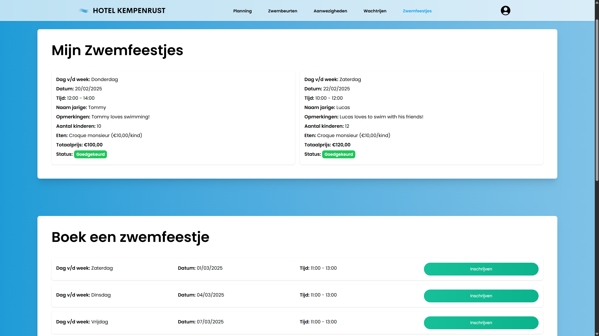
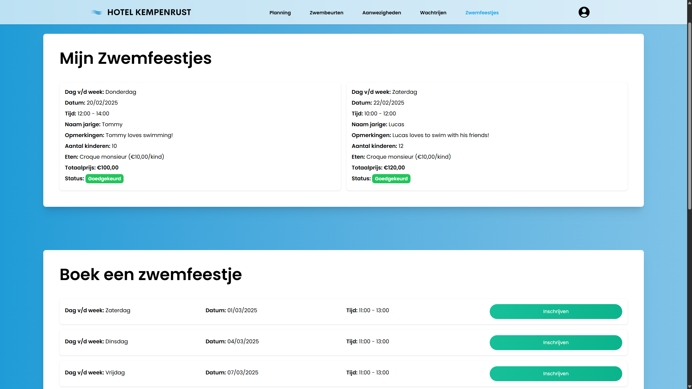

Hotel Kempenrust
During the Skill Integration 2 course, I worked on a school project alongside a team of highly motivated and talented students. Together, we were tasked with developing a web application for a simulated client — in this case, our lecturer acting as the client.
The goal of the project was to design and build a solution that would simplify the management of a small swimming pool facility, including tasks such as booking swimming lessons, organizing pool parties, and streamlining general administration — all of which had previously been handled through phone calls and paperwork.
Working closely with my team, we focused on delivering a user-friendly and visually appealing design that prioritized efficiency and flexibility.